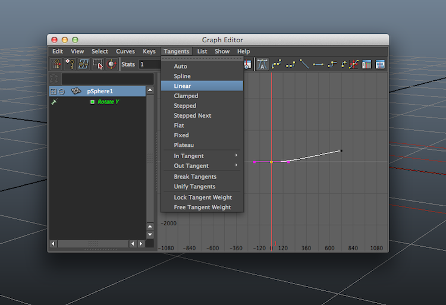

Here you can find a list of projects I'm working on for my Multimedia Studio

These are the screenshots of my local files, I did the majority of the scenarios locally off my own machine and transfered everything for this site onto the university computers. So the resources for individual projects were local.
Local Files
Files for Holiday video
Files for Maya Planet
Files for Load Video with Button
Files on Unix Server
Adobe Premiere Pro
This is the Holiday video I created in Adobe Premiere Pro using video and audio clips provided to me by the lecturer


Maya Planet
For my animation of a planet of my choice, I chose to stick with what I knew and make an animation of Earth
Starting off with a polygon sphere.
Adding on a lambert texture for a base.
Next I added on the earth texture.

Lighting was added with a directional light, representing the Sun's light.
Linear tangents were implemented to keep the Earth from starting off at a slower speed, and also to keep it from decreasing nearer the end of the rotation. This just kept it with a smooth rotation.
Z axis tilt at 22.5 degrees in viewport
The final render of the planet is seen below
Working with Adobe Premiere Pro
When importing the 720 still frames into Adobe Premiere Pro, along with the enigmatic.wav soundtrack given to us by our lecturer, I am able to create a short film animation of the earth's rotation.

Pro Tools
Adobe Flash
Load Video with Button